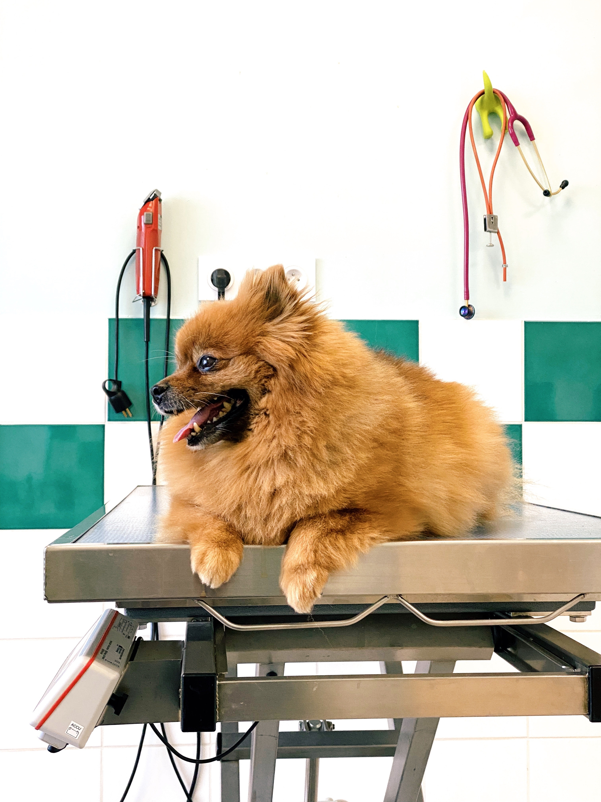

CliniVet
Aqui seu bichinho é cuidado com todo o carinho e atenção
Content
Atendemos a população de Pilar e região há mais de 30 anos, sempre prestando serviços de qualidade com o corpo médico e técnico renomado na cidade. Além da nossa prestigiada clínica, dispomos também de banho e tosa com hora marcada e de um vasto sortimento de artigos de pet shop. Venha conferir!